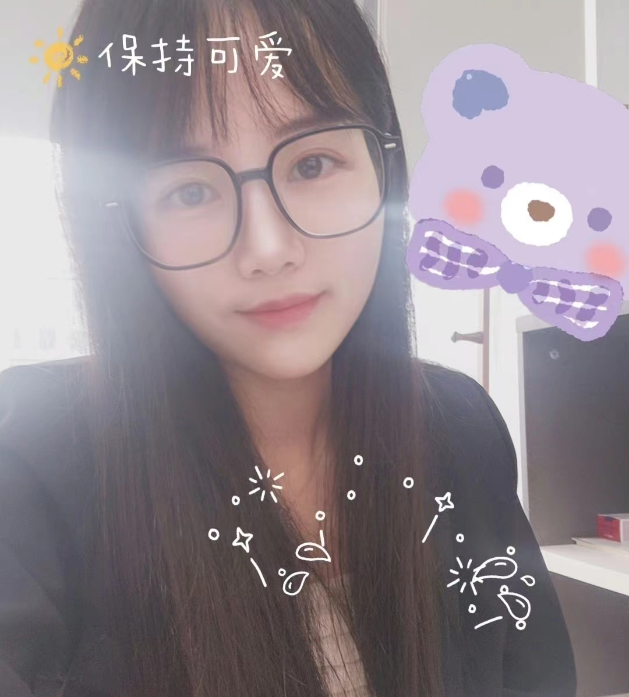

Journalism enthusiast, once worked for Hangzhou Youth Times as a reporter in the health Department of the newspaper, in-depth reporting on social hot spots about medical health, actively digging out stories behind the news, and presenting real and objective news facts to the public.
Later, I worked as a new media editor in Sina Leju, during which I wrote a number of high-quality real estate articles with high reading volume and gained a lot of fans.
In addition to working in traditional media and portal websites, Wang Yuanyuan is also actively involved in the field of we-media. Her "We media" accounts, such as Weibo and wechat video accounts, have attracted the attention of many fans with their novel themes and interesting writing style.
She has a deep love and persistent pursuit of journalism. She believes that news is not only a tool to convey information, but also an important force to shape social values and guide public opinion. Therefore, she always adheres to the principles of truth, objectivity and fairness of news, and strives to provide high-quality news content for the society.
In the future career, Wang Yuanyuan will continue to uphold the original intention and mission of journalists, constantly explore new ways and new methods of news communication, and provide more quality and in-depth news content for the society.